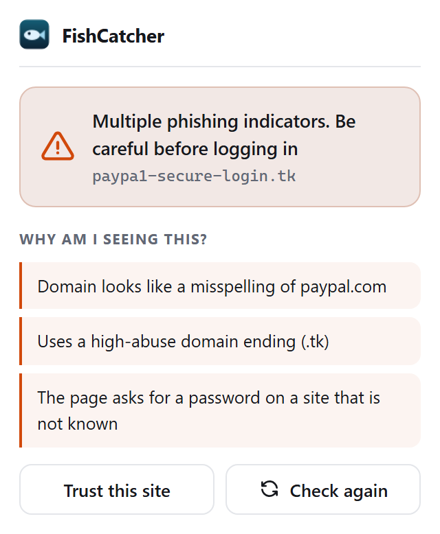

FishCatcher checks the site you are on and warns you in plain language when it looks like a scam. It never blocks you, and nothing leaves your device.
Chrome, Brave, Edge, Opera and Firefox. English and Georgian.

Every check runs on your device. When something looks off, FishCatcher tells you what and why, so you learn to spot it yourself.
The toolbar icon turns green, yellow, orange or red. You always decide what to do next.
Plain sentences like "this domain looks like a misspelling of paypal.com", not scary jargon.
Right click any QR image to read the link inside before you trust it. Fully on your device.
Flags a link whose text does not match where it really goes, and a download disguised as a safe file.
FishCatcher does its checks locally, using lists that ship inside the extension. It works with no internet connection, and you can verify that by reading the code.
Nothing from the pages you visit is sent anywhere. There is no sign up and no profile.
Two optional features can look something up online. Both are off until you turn them on, and each says exactly what it sends.
The whole thing is MIT licensed. The privacy promise is one you can check yourself.
Short, plain lessons on the tricks scammers use, from fake login pages to QR and code scams. No jargon.
Store listings are on the way. Until then, the install guide walks you through adding it in a minute.
Chrome, Brave, Edge and Opera share one build. Firefox has its own. Both are covered in the guide.